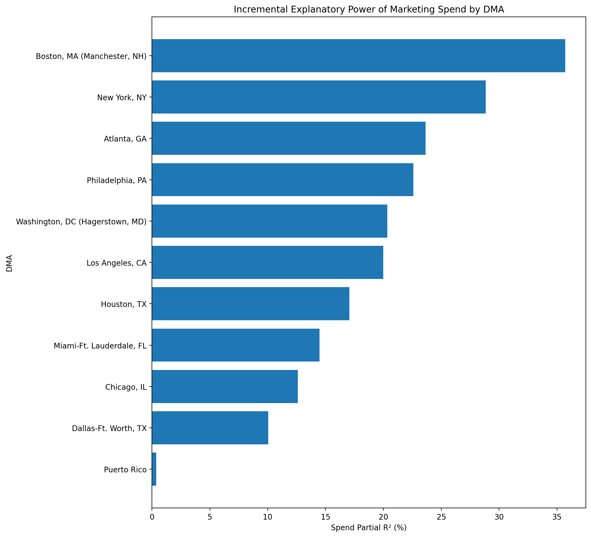
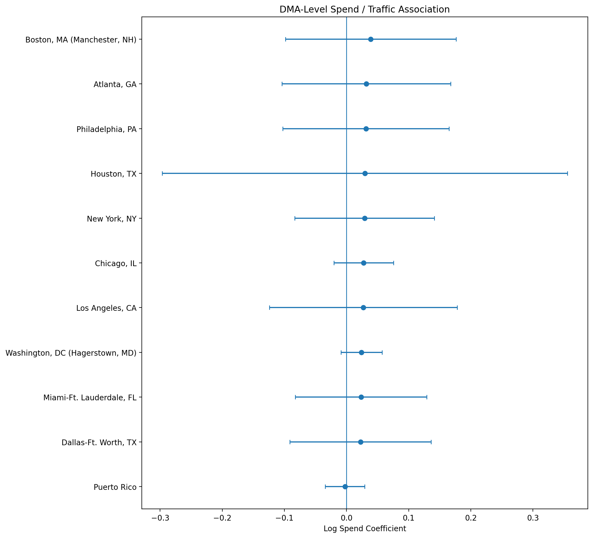
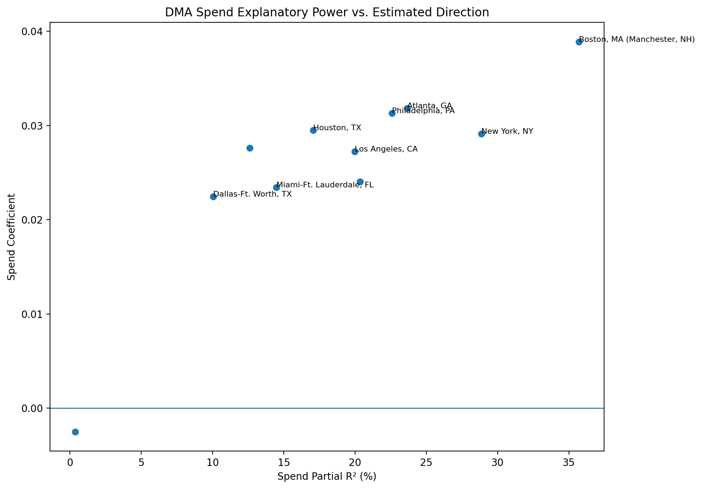
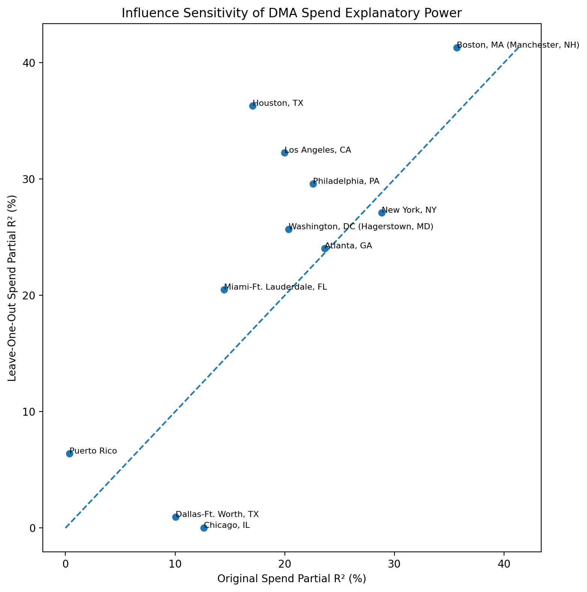

Within-market regression analysis of marketing spend and traffic after controlling for trend and seasonality.
Marketing spend provides moderate incremental explanatory power across the typical DMA, although the strength of the relationship varies materially by market.
No DMA produced a statistically significant negative spend coefficient under the current specification. This does not establish causality, but it provides little evidence of a systematic negative spend–traffic relationship.
Approximately 97.1% of modeled DMAs produced positive spend coefficients.
Spend partial R² measures the share of traffic variation remaining after trend and seasonality controls that becomes explained when marketing spend is added to the DMA-specific regression.

The spend coefficient describes the direction of the modeled relationship between log marketing spend and log traffic after controlling for trend and seasonality.


Each DMA model was re-estimated after removing the single observation with the largest Cook's distance. This tests whether the estimated spend relationship depends heavily on one unusually influential month.

| DMA | Spend_Partial_R2 | Spend_Beta | Spend_P_Value | Spend_Explanatory_Strength | Influence_Severity | LOO_Sensitivity_Classification |
|---|---|---|---|---|---|---|
| Boston, MA (Manchester, NH) | 35.700 | 0.039 | 0.579 | Strong | High | Sensitive |
| New York, NY | 28.850 | 0.029 | 0.612 | Moderate | High | Sensitive |
| Atlanta, GA | 23.643 | 0.032 | 0.646 | Moderate | High | Sensitive |
| Philadelphia, PA | 22.575 | 0.031 | 0.647 | Moderate | High | Sensitive |
| Washington, DC (Hagerstown, MD) | 20.337 | 0.024 | 0.154 | Moderate | Moderate | Sensitive |
| Los Angeles, CA | 19.971 | 0.027 | 0.724 | Moderate | High | Sensitive |
| Houston, TX | 17.062 | 0.029 | 0.859 | Moderate | High | Sensitive |
| Miami-Ft. Lauderdale, FL | 14.478 | 0.023 | 0.664 | Low | High | Sensitive |
| Chicago, IL | 12.604 | 0.028 | 0.260 | Low | Moderate | Sensitive |
| Dallas-Ft. Worth, TX | 10.035 | 0.022 | 0.699 | Low | High | Highly Sensitive |
| Puerto Rico | 0.356 | -0.003 | 0.877 | Minimal | Moderate | Sensitive |
For each DMA, two monthly traffic regressions were estimated.
Reduced model: Log Traffic ~ Trend + Month Sin + Month Cos
Full model: Log Traffic ~ Log Spend + Trend + Month Sin + Month Cos
Spend partial R² measures the incremental explanatory contribution of marketing spend after accounting for trend and annual seasonality. HC3 robust covariance estimates are used for inference.
Cook's distance and leave-one-out sensitivity analysis are used to identify DMA results that depend materially on individual observations.
This analysis measures association and explanatory power. It does not independently establish that marketing spend caused changes in traffic.